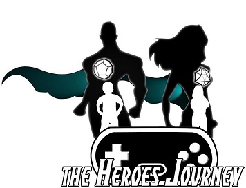
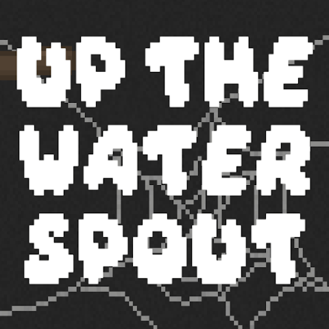
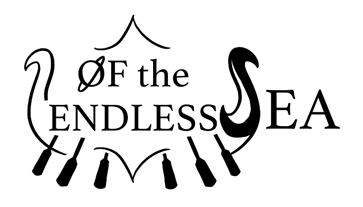
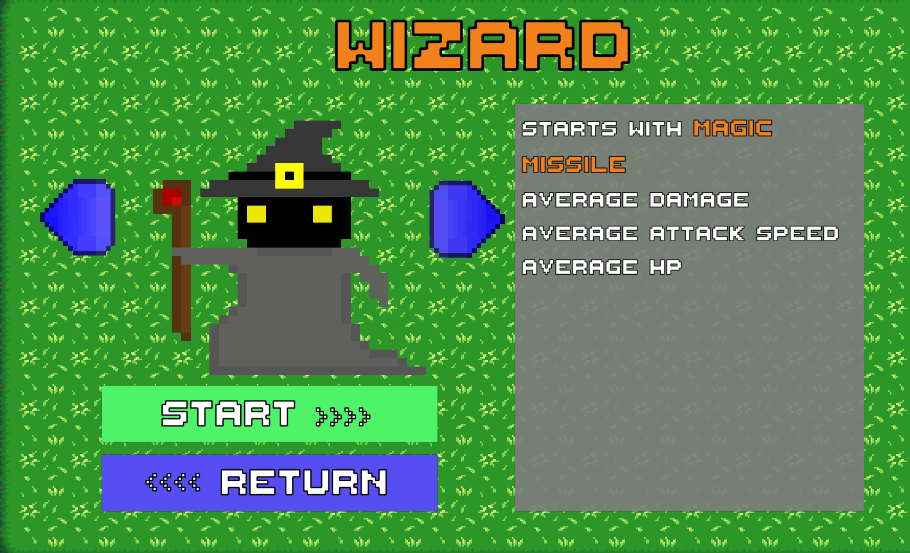
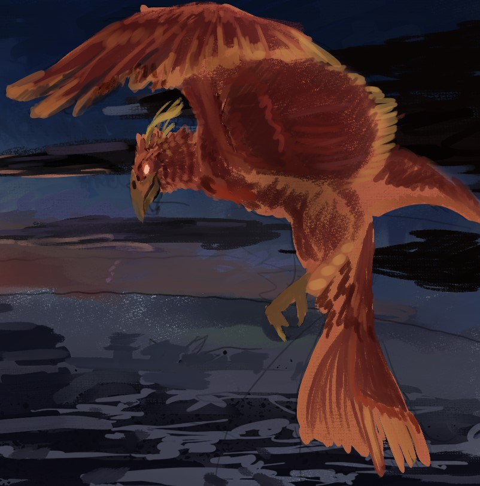
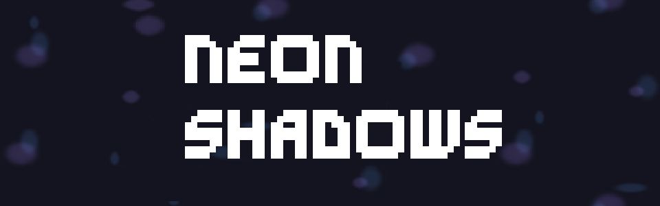

My Name is Patrick Doherty, I am a recently graduated Game Design & Development major at RIT. I have always had a very math oriented brain and have been interested in computers and programming from a young age, combine that with a love of games and storytelling and it was only a matter of time before I would explore game design as a career. Throughout my time here at RIT I have worked on many different projects learning valuable lessons in team work, iterative design, and AGILE development practices. While at RIT I have learned C#, C++, Unity WebGL, Unity Mobile Games, I have also published a game on the Google Play Store.
Since a very young age I have known I was interested in creating games. I've spent many years learning about coding and the development process. I have an extensive history with Tabletop Roleplaying Games developing adventures and creating stories with many different people. I even work with a charity running Roleplaying Games to children to teach them social and problem solving skills, The Heroes Journey Inc.
An endless mobile platformer where you play as Itsy the Spider trying to climb up the water spout without getting knocked down by the endless raindrops. Sling webs, land on platforms, and collect powerups while avoiding the raindrops to get the highest score. Inspired by doodle jump this game was created in a team of 4 using Unity as part of a Casual Game Development class.
A Tabletop Roleplaying game created in a team of Five over the course of a single semester. This is a space fantasy viking inspired campaign. Explore the 'Endless Sea' as a group of vikings in a runed enchanted ship. Created using Adobe InDesign, available on DriveThruRPG.
A rouge-lite inspired by the game Vampire Survivors, where you play as a single character who defeats endless enemies, progress through levels and face bosses as you try to solve the mystery of what has been messing with the seasons. Developed as a team of Four over the course of two semesters, this game was developed in part with the MAGIC Maker Prototype edition. Click the link to try download a ZIP demo, un-zip all items into a single folder and run the .exe file named "Shattered Seasons"
A couch co-op game where Twin Stick Shooter meets Bullet Hell boss. Play as a "Party Phoenix" as you compete against your friends to light up the sky during the festival of flames. In this local co-op game you get to battle your friends playing as a flying phoenix that fights off your friend's phoenix through the use of different "bullet patterns" inspired by various types of fireworks displays. In this project I worked as part of a team of eight to develop this game demo as part of Production Studio class at RIT. I worked on various different systems in the game such as temporarily saving player loadouts, basic player controls, menu interactions and the map system.
An isometric Hack 'n Slash game set in a Cyberpunk City. "In Neon Shadows, you are a Shadow Runner navigating the dangerous streets of Neon City. With fluid combat mechanics and open, expansive levels, you uncover a conspiracy that threatens the entire metropolis. Your choices shape the city’s future, and your actions determine your fate. Will you bring justice to Neon City, or will you become another shadow in the neon lights?" I worked as a Gameplay Programmer in a team of 4. Primarily working on the player and all of its mechanics including melee and range attacks, dash mechanics and a basic 3 hit combo attack. Additionally I was able to practice my level design skills by designing the tutorial level. This project took place over 3 months as part of a "Production Studio" class at RIT.
